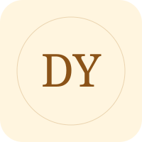
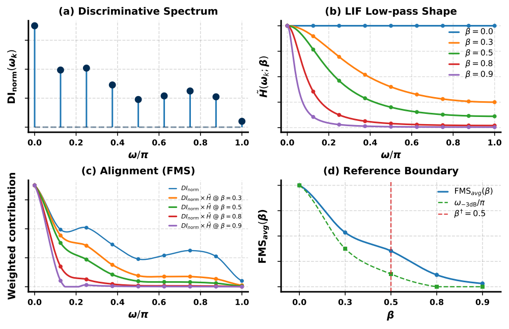
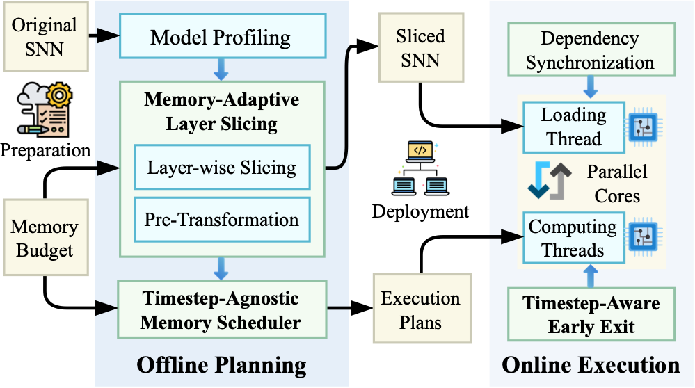
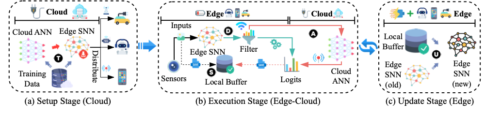
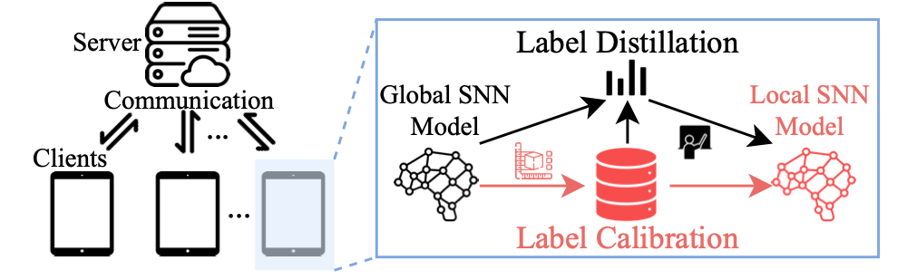
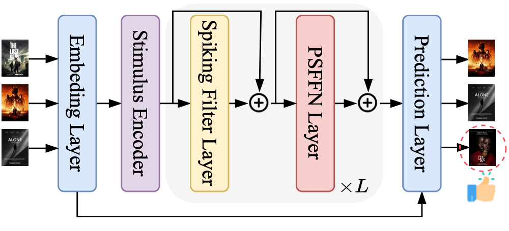
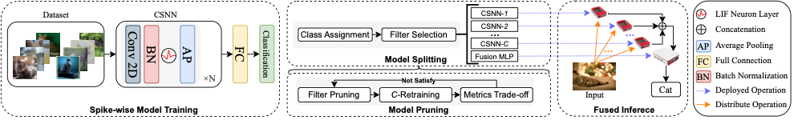
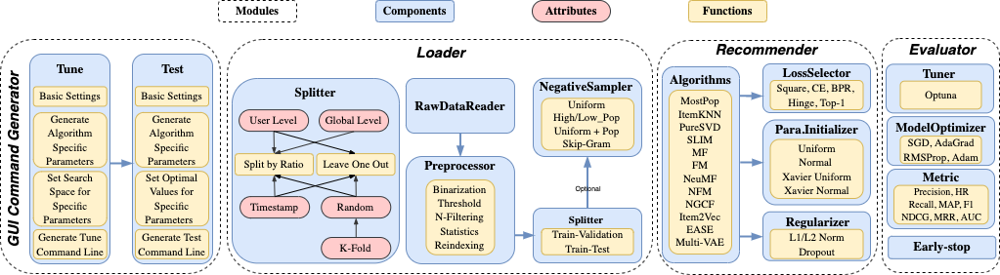

Di Yu | 余帝I am a Ph.D. student in the College of Computer Science and Technology at Zhejiang University, advised by Prof. Shuiguang Deng. I expect to graduate in March 2027. My research focuses on brain-inspired computing, with an emphasis on making spiking neural networks practical and efficient. I work across learning algorithms, neuromorphic software, and device–edge–cloud systems, from sensing and recommendation to memory-efficient inference and collaborative deployment. I also contribute to open-source research tools, including SOUL for evaluating spiking neural networks in edge sensing and DaisyRec for reproducible recommendation research. |
 |
News
2026 Our work on mmWave sensing, memory-adaptive inference, and efficient spiking neurons appears at ICML, WWW, and ACM MM 2026.
2025 Three first-author papers at IJCAI 2025 (Oral), covering edge–cloud collaboration, federated learning, and on-device recommendation.
2024 EC-SNN, our work on splitting deep spiking networks for edge devices, appears at IJCAI 2024 (Oral).
Publications
* Equal contribution. † Corresponding author. Featured first-author papers are highlighted.
4 featured papers
 |
Frequency Matching in Spiking Neural Networks for mmWave SensingICML 2026 (Poster)Understanding how spiking neuron dynamics align with the frequency characteristics of mmWave signals for sensing. |
 |
MASI: Memory-Adaptive Inference Framework for Spiking Neural Networks on Edge DevicesWWW 2026 (Poster)Memory-adaptive inference for deploying spiking neural networks on resource-constrained edge devices. |
 |
ECC-SNN: Cost-Effective Edge-Cloud Collaboration for Spiking Neural NetworksIJCAI 2025 (Oral)Cost-effective collaboration between edge and cloud models for spiking neural network inference. |
 |
Exploiting Label Skewness for Spiking Neural Networks in Federated LearningIJCAI 2025 (Oral)Learning with spiking neural networks under label-skewed data distributions in federated settings. |
 |
Cost-Effective On-Device Sequential Recommendation with Spiking Neural NetworksIJCAI 2025 (Oral)Bringing sequential recommendation onto devices with efficient spiking neural networks. |
 |
EC-SNN: Splitting Deep Spiking Neural Networks for Edge DevicesIJCAI 2024 (Oral)Splitting deep spiking neural networks to support inference on edge devices. |
 |
Daisyrec 2.0: Benchmarking recommendation for rigorous evaluationTPAMI 2022A benchmark for rigorous evaluation and fair comparison of recommendation algorithms. |
Are We Evaluating Rigorously? Benchmarking Recommendation for Reproducible Evaluation and Fair ComparisonRecSys 2020 (Oral)Reproducible evaluation protocols for comparing recommender systems fairly. |
Other Publications (11)
ShiftLIF: Efficient Multi-Level Spiking Neurons with Power-of-Two Quantization
Kaiwen Tang*, Di Yu*, Jiaqi Zheng, Changze Lv, Qianhui Liu, Zhanglu Yan, Weng-Fai Wong
ACM MM 2026 · PosterNeuroRT: An Efficient Neuromorphic Processor via Synapse Compression and Dynamic Neuron Pruning
Wentao Tong, Di Yu, Xin Du, Linshan Jiang, Gang Pan, Shuiguang Deng
TCAD 2026SAFA-SNN: Sparsity-Aware On-Device Few-Shot Class-Incremental Learning with Fast-Adaptive Structure of Spiking Neural Network
Huijing Zhang, Muyang Cao, Linshan Jiang, Xin Du, Di Yu, Changze Lv, Shuiguang Deng
ICLR 2026 · PosterMPL-Schedule: A Dynamic Priority-Based Scheduling Scheme for Spiking Neural Networks
Xiaofan Zhao, Xin Du, Di Yu, Linshan Jiang, Gang Pan, Shuiguang Deng
SCIS 2026Biologically Plausible Learning via Bidirectional Spike-Based Distillation
Yifei Wang, Yanxun Zhang, Changze Lv, Yiyang Lu, Jingwen Xu, Xiaohua Wang, Di Yu, Xin Du, Xuanjing Huang, Xiaoqing Zheng
ICLR 2026 · PosterSNN-IoT: Efficient Partitioning and Enabling of Deep Spiking Neural Networks in IoT Services
Xin Du, Wentao Tong, Linshan Jiang, Di Yu, Zhiliang Wu, Qiang Duan
TSC 2025Dendritic Localized Learning: Toward Biologically Plausible Algorithm
Changze Lv, Jingwen Xu, Yiyang Lu, Xiaohua Wang, Zhenghua Wang, Zhibo Xu, Di Yu, Xin Du, Xiaoqing Zheng, Xuanjing Huang
ICML 2025 · PosterExploiting Label Skewness for Spiking Neural Networks in Federated Learning
Di Yu, Xin Du, Linshan Jiang, Huijing Zhang, Shuiguang Deng
IJCAI 2025 (Oral)Cost-Effective On-Device Sequential Recommendation with Spiking Neural Networks
Di Yu, Changze Lv, Xin Du, Linshan Jiang, Qing Yin, Wentao Tong, Xiaoqing Zheng, Shuiguang Deng
IJCAI 2025 (Oral)Daisyrec 2.0: Benchmarking recommendation for rigorous evaluation
Zhu Sun, Hui Fang, Jie Yang, Xinghua Qu, Hongyang Liu, Di Yu, Yew-Soon Ong, Jie Zhang
TPAMI 2022Are We Evaluating Rigorously? Benchmarking Recommendation for Reproducible Evaluation and Fair Comparison
Zhu Sun, Di Yu, Hui Fang, Jie Yang, Xinghua Qu, Jie Zhang, Cong Geng
RecSys 2020 (Oral)
Manuscripts Under Review (10)
Hippocampus-Cortex-Inspired Memory Hierarchy Enables Efficient Continual Learning with Spiking Neural Networks on Edge Devices
Xin Du, Yongjun Peng, Di Yu, Xiaofan Zhao, Wentao Tong, Linshan Jiang, Shunwen Bai, Jianfeng Feng, Shitong Xiang, Gang Pan, Shuiguang Deng
Major RevisionUni-SFed: Efficient and Robust Spiking Neural Networks in Model-Heterogeneous Federated Learning
Wentao Tong, Weisong Zhang, Di Yu, Xin Du, Linshan Jiang, Siyang Jiang, Gang Pan, Shuiguang Deng
Major RevisionSENSA: Effective Input Encoding for Spiking Neural Networks in Edge Sensing
Di Yu, Weisong Zhang, Changze Lv, Xin Du, Linshan Jiang, Meikang Qiu, Shuiguang Deng
Under ReviewSpecMDNet: Efficient mmWave Action Recognition with Spiking Neurons
Di Yu*†, Zhenyu Liao*, Wentao Tong, Linshan Jiang, Sijie Ji, Xin Du, Hailiang Zhao, Meikang Qiu, Shuiguang Deng
Under ReviewNeuroBridge: Compiler-Assisted Board-Projection Transport for Scalable Neuromorphic Systems
Xiaofan Zhao, Di Yu, Zhuo Chen, Xin Du, Gang Pan, Shuiguang Deng
Under ReviewSNN-IE: Temporal Interleaved Fusion in Spiking Neural Networks for Efficient Inference
Wentao Tong*, Di Yu*, Zhuo Chen, Meikang Qiu, Gang Pan, Shuiguang Deng
Under ReviewMigrate Computation, Not Data: Fault Recovery in Neuromorphic Many-Core Systems
Muyang Cao, Di Yu, Peiling Zhu, Linshan Jiang, Xin Du, Shuiguang Deng, Gang Pan
Under ReviewFedMQR: Communication-Efficient Federated Fine-Tuning for LLM-based Recommendation
Yuqi Zhang, Di Yu†, Hui Fang
Under ReviewAn Edge-Cloud Collaborative System with Joint ANN-SNN Training and Inference
Xin Du, Youran Zhu, Di Yu†, Linshan Jiang, Zhihui Lu, Huajin Tang, Gang Pan
Under ReviewFedSCE: Computation- and Communication-Efficient Federated Sequential Recommendation in Heterogeneous Environment
Yuqi Zhang, Xingyi Ye, Di Yu†, Hui Fang
Under Review
Experience
| Zhejiang University Sep. 2023 – Present Ph.D. Student in Computer Science and Technology Advisor: Prof. Shuiguang Deng · Expected graduation: March 2027 | |
| Singapore Management University Mar. 2021 – Aug. 2022 Master of IT in Business (MITB) School of Computing and Information Systems · Singapore | |
| Shanghai University of Finance and Economics Sep. 2017 – Jun. 2019 Master’s degree in Management Science and Engineering School of Information Management and Engineering · Shanghai | |
| Shanghai University of Finance and Economics Sep. 2013 – Jun. 2017 Bachelor’s degree in Computer Science and Technology School of Information Management and Engineering · Shanghai | |
| Monetary Authority of Singapore Jun. 2021 – Jun. 2022 Algorithm Researcher Singapore | |
| Cardinal Operations Jul. 2019 – Sep. 2020 Algorithm Engineer Shanghai |
Projects
🚀 Build in Open. Grow Together.
Research Projects
- Neuromorphic computing with integrated sensing, memory, and computation
National Key R&D Program of China · Project member
No. 2022YFB4500100 · Oct. 2022 – Sep. 2026 - Building and deploying intelligent services with spiking neural networks
National Natural Science Foundation of China · Project member
No. 62502443 · Jan. 2026 – Dec. 2028 - Service Computing
National Science Fund for Distinguished Young Scholars · Project member
No. 62125206 · Jan. 2022 – Dec. 2026
Academic Service
- Reviewer: ICLR, ICML, WWW, AAAI, ACM MM, and IEEE TNNLS.
- Member: IEEE, ACM, and CCF.
Awards and Honors
- National Scholarship (multiple awards).
- Outstanding Graduate Student, Zhejiang University.